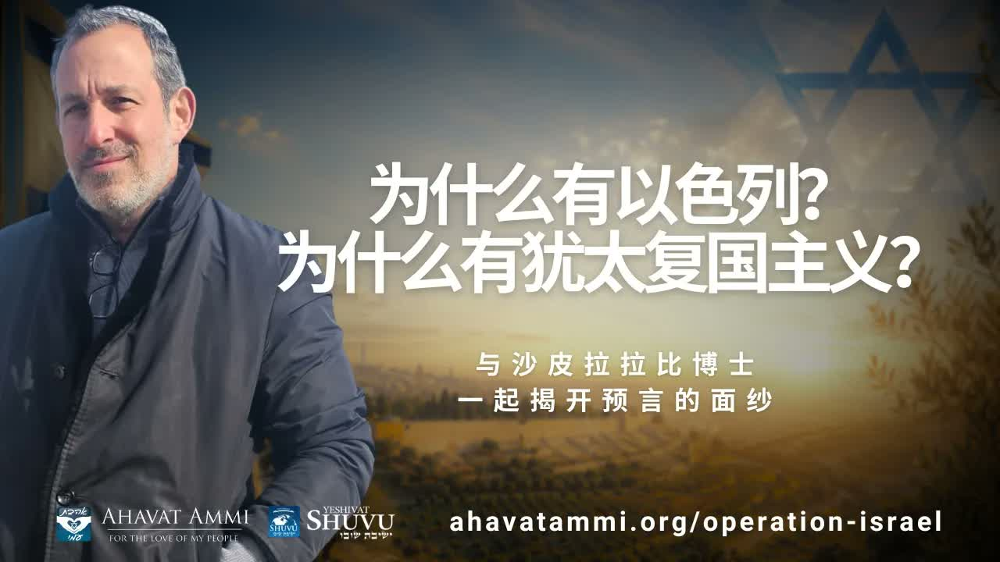

錫安的陣痛與彌賽亞的降臨 Zion's Birth Pangs and the Coming of Messiah
在反猶聲浪四起之際，沙皮拉拉比博士打開《以賽亞書》六十六章，論證以色列國的誕生本身——就是「彌賽亞陣痛」(Hevlei Ha-Mashiach) 的記號。 As antisemitism crests across the West, Rabbi Dr. Shapira opens Isaiah 66 to argue that the birth of the State of Israel is itself the sign of Hevlei Ha-Mashiach — the birth pangs of the Messiah.
沙皮拉拉比博士以一個極為直接的論斷開場：在當今這個反猶主義捲土重來、反以色列言論四處蔓延的時代，「猶太復國主義就是支持以色列、支持耶書亞、支持妥拉，並且是引領彌賽亞降臨世界的關鍵工具。」他更進一步：「任何一個不是錫安主義者的人，其實他並不真正相信彌賽亞的到來。」這不是政治表態，而是一個極具份量的解經結論——他將循著《以賽亞書》第六十六章、阿巴貝爾 (Abarbanel)、拉什 (Rashi)、哈薩姆·索佛 (Chasam Sofer) 與拉達克 (Radak) 的傳統，逐節展開。 Rabbi Dr. Shapira opens with a claim that lands like a hammer: in an age when antisemitism is cresting and anti-Israel rhetoric is everywhere, “Zionism supports Israel, supports Yeshua, supports the Torah — and it is the crucial instrument leading the Messiah's coming into the world.” He goes further: “Anyone who is not a Zionist does not truly believe in the coming of the Messiah.” This is not a political opinion. It is an exegetical conclusion he develops carefully through Isaiah 66, Abarbanel, Rashi, the Chasam Sofer and Radak — the same midrashic methods Jewish sages have used for two thousand years.
一、為什麼這個信息在此刻特別重要I. Why This Teaching Lands Now
從西方校園到歐洲街頭，反猶主義以新的面貌捲土重來——只是這一次，它常常戴著「反錫安主義」的面具。沙皮拉拉比認為，這正是基督徒不能再用敏感、模糊或「中立」立場逃避這個議題的時刻。經文沒有給我們中立的選項。 From Western university campuses to European streets, antisemitism is back — only now it usually wears the mask of "anti-Zionism." Rabbi Shapira argues this is precisely the moment Christians can no longer afford to be sensitive, vague, or "neutral." The Scripture, in his reading, gives us no neutral option.
「讓我說的非常清楚：猶太復國主義支持以色列，也是支持耶書亞的，更是支持妥拉的。並且他是引領彌賽亞降臨到世界的關鍵工具。」——沙皮拉拉比博士 “Let me be very clear: Zionism supports Israel, it supports Yeshua, and it supports the Torah. And it is the crucial instrument leading the Messiah's coming into the world.”— Rabbi Dr. Itzhak Shapira
拉比所說的「Zionism / 錫安主義」並不是一個政治標籤；它指的是「猶太人歸回應許之地」這件神在先知書中反覆應許、並親自執行的工作。把它從神學中抽離，按拉比的話說，就是把彌賽亞論的根抽掉了。 When the rabbi says “Zionism,” he doesn't mean a modern political label — he means the return of the Jewish people to the Land of Promise, a thing God promises, executes, and accomplishes in the prophets again and again. To strip Zionism out of theology is, in his words, to pull the root out of messianism.
二、《以賽亞書》六十六章八節 ── 「一日之內，國度誕生」II. Isaiah 66:8 — “A Nation Born in One Day”
拉比的論證起點是《以賽亞書》六十六章第八節——一節對任何讀過 1948 年五月十四日歷史的人來說都極為震撼的經文： The argument starts with Isaiah 66:8 — a verse that lands with shocking force on anyone who has read the history of May 14, 1948:
「國豈能一日而生？民豈能一時而產？因為錫安一劬勞，便生下兒女。」——以賽亞書 66:8 “Who has heard such a thing? Who has seen such things? Shall a land be born in one day? Shall a nation be brought forth in one moment? For as soon as Zion was in labor, she brought forth her children.”— Isaiah 66:8
希伯來文用的是mi shama kazot（מי שמע כזאת）——「誰曾聽過這樣的事？」哈薩姆·索佛 (Chasam Sofer) 解讀這句驚嘆並非單指誕生之奇蹟，而更是指之前所遭受的歧視之奇異：在歷史上沒有任何民族曾如此被驅散、被屠殺、被世界遺忘，卻又一日之內歸回故土、重建國家。換句話說，先知以三千年前的一句話，預言了「以色列國」這個 1948 年五月十四日下午所發生的奇蹟。 The Hebrew is mi shama kazot (מי שמע כזאת) — “Who has heard such a thing?” The Chasam Sofer reads this exclamation not only as awe at the birth itself, but as awe at the uniqueness of the discrimination that preceded it: no nation in history had ever been scattered, slaughtered, and erased the way Israel was — and yet in a single day was restored as a nation in its own land. The prophet, three millennia ago, was describing what happened on the afternoon of May 14, 1948.
三、阿巴貝爾的解讀 ── 國度誕生即彌賽亞時代開始III. Abarbanel — When the Nation is Born, the Messianic Age Begins
中世紀的猶太聖賢阿巴貝爾 (Don Isaac Abarbanel, 1437–1508) 在他的《以賽亞書》註釋中，對六十六章八節作出一個極為大膽的判斷：當以色列再一次成為一個民族的那天，彌賽亞的時代 (Zeman Ha-Mashiach, זמן המשיח) 與死人復活 (Techiat Ha-Metim, תחיית המתים) 就已經臨近——具體而言，當被擄者們歸回故土時，這個倒數計時就開始了。 The medieval Jewish sage Don Isaac Abarbanel (1437–1508), in his commentary on Isaiah, makes a startling judgement on 66:8: the day Israel becomes a nation again is the day the Messianic Age (Zeman Ha-Mashiach, זמן המשיח) and the resurrection of the dead (Techiat Ha-Metim, תחיית המתים) are at hand — specifically, when the exiles begin making aliyah, the countdown has begun.
這就是拉比沙皮拉得出那個尖銳結論的根據：「任何一個不是錫安主義者的人，其實他並不真正相信彌賽亞的到來。」因為按阿巴貝爾的解讀，「猶太人歸回故土」(Aliyah, עלייה) 本身就是彌賽亞臨到的主要記號之一。否認這個記號，就等於在彌賽亞論上開了一個無法修補的洞。 This is the source of Rabbi Shapira's sharp conclusion: “Anyone who is not a Zionist does not truly believe in the coming of the Messiah.” Because in Abarbanel's reading, the return of the Jewish people to the Land — Aliyah (עלייה) — is itself one of the primary signs of the Messiah's coming. To deny that sign is to tear an unrepairable hole in one's own messianism.
這個邏輯對基督徒同樣成立：若耶書亞 (Yeshua) 是「大衛的子孫」、是要從以色列出來的彌賽亞，那麼以色列國的歸回——按猶太智者的傳統——並不是政治新聞，而是基督將至的預備。 The same logic holds for Christians: if Yeshua is the Son of David — the Messiah who comes out of Israel — then the return of the State of Israel is, on the rabbis' reading, not political news. It is the preparation for the King.
四、彌賽亞的陣痛 (Hevlei Ha-Mashiach)IV. The Birth Pangs of the Messiah (Hevlei Ha-Mashiach)
拉比沙皮拉繼續延伸：以色列國 1948 年的誕生並不是單一事件，而是一段持續的陣痛——希伯來文叫Hevlei Leidah（חבלי לידה，「分娩之痛」），在彌賽亞語境下稱Hevlei Ha-Mashiach（חבלי המשיח，「彌賽亞的陣痛」）。從 1948 年至今，以色列所經歷的每一場戰爭、每一次空襲、每一次內外的攻擊，都是這場分娩的一部分；國土也在每一場陣痛之後擴張。 Rabbi Shapira pushes the argument further: the 1948 birth of Israel is not a single event but a continuing labor — what Hebrew calls Hevlei Leidah (חבלי לידה, “birth pangs”), and in messianic context Hevlei Ha-Mashiach (חבלי המשיח, “the birth pangs of the Messiah”). Every war Israel has fought since 1948, every air-raid, every internal and external attack — these are all part of the same delivery. And after each contraction, the territory expands.
拉什 (Rashi) 在他的註釋中將這個「陣痛」與另一段眾所周知的經文連起來：「那報好信息、傳救恩…的人，他的腳登山何等佳美。」（以賽亞書 52:7）——希伯來文 Mah na'avu al he'harim raglei mevasser（מה נאוו על־ההרים רגלי מבשר）。換言之，陣痛之後接著的，是「報好信息者」的腳步聲——彌賽亞已在門口。 Rashi, in his commentary, links these birth pangs to another famous text: “How beautiful upon the mountains are the feet of him who brings good news… who proclaims salvation…” (Isaiah 52:7) — Hebrew Mah na'avu al he'harim raglei mevasser (מה נאוו על־ההרים רגלי מבשר). After the pangs come the footsteps of the one bringing good news. The Messiah is at the door.
五、從 Achishena 到 B'ito ── 救贖的兩種時序V. From Achishena to B'ito — The Two Timetables of Redemption
猶太傳統認為救贖有兩種速度：Achishena（אחישנה，「我必加快它」），即靠以色列的悔改與善行提早來的救贖；以及 B'ito（בעיתו，「按其定時」），即無論以色列預備好與否，按神所定的時候必然到來的救贖。這兩個詞並排出現於以賽亞書 60:22：「最小的要成為千族；至卑的要成為強國。到了日期，我耶和華要速成這事。」 Jewish tradition teaches that redemption has two possible tempos: Achishena (אחישנה, “I will hasten it”) — redemption that comes early through Israel's merit and repentance — and B'ito (בעיתו, “in its appointed time”) — redemption that comes inevitably at the moment God has fixed, whether Israel is ready or not. Both words sit side by side in Isaiah 60:22: “the smallest shall become a strong nation; I am the Lord, in its time I will hasten it.”
阿巴貝爾的解讀是：當「彌賽亞的陣痛」開始的時候，Achishena 的窗口已經關閉。我們不再活在「藉悔改提前」的階段；我們活在「按定時必至」的階段。換句話說：時候已經到了。 Abarbanel's reading: once the birth pangs begin, the window of Achishena has closed. We no longer live in the era of “early redemption through merit.” We live in the era of “appointed time.” In other words: the time has come.
「我要直說：如果你相信『被提』，那你就來錯頻道了。我們正處於分娩的過程中，彌賽亞誕生的過程之中。而以色列正在被生出來。」——沙皮拉拉比博士 “I'll be direct: if you believe in the Rapture, then you've come to the wrong channel. We are in the process of childbirth — in the process of the Messiah's birth. And Israel is being born.”— Rabbi Dr. Itzhak Shapira
這不是一句輕描淡寫的話。許多西方福音派教會以「災前被提」(pre-tribulation Rapture) 為核心教義，期待信徒在患難之前被取去。沙皮拉拉比所走的猶太-彌賽亞路線則認為：信徒不是「被搬離產房」，而是「在產房中陪產」——在彌賽亞誕生時與以色列同站立、同受痛、同得榮。這是與「災前被提」根本不同的末世圖景，值得每一位基督徒嚴肅省察。 This is not a throw-away line. Many Western evangelical churches hold pre-tribulation Rapture as a core doctrine — believers caught up before the tribulation. The Jewish-Messianic line Rabbi Shapira walks says something fundamentally different: believers are not removed from the delivery room; they are in the delivery room, standing with Israel as the Messiah is born, suffering with her, and being glorified with her. This is a fundamentally different eschatology from the pre-trib Rapture, and every Christian deserves to weigh it carefully.
六、歌革與瑪各 ── 過去一百年的陣痛VI. Gog and Magog — A Century of Contractions
拉比指出，過去一百年所發生的事——第一次世界大戰、第二次世界大戰、希特勒、納粹大屠殺、歷次以阿戰爭、加薩衝突、以色列與伊朗代理人之戰——按拉比傳統並非孤立事件，而是「歌革與瑪各」(Gog u'Magog) 的逐步展開。每一次「陣痛」之後，以色列疆界擴張了一些，回歸的人數增加了一些，世界更加被分成「站以色列邊」和「對以色列舉起手」兩邊。 The rabbi points out that what has unfolded over the past century — World War I, World War II, Hitler, the Shoah, every Arab-Israeli war, Gaza, the proxy war with Iran — is not, in the rabbinic tradition, a series of isolated events. It is the unfolding of Gog u'Magog. After each contraction, Israel's borders have expanded, the number of returning exiles has grown, and the world has divided more sharply into those who stand with Israel and those who raise a hand against her.
拉達克 (Rabbi David Kimhi, Radak, 1160–1235) 在他的註釋中預言：在彌賽亞誕生之前，最後一場「歌革與瑪各」之戰將要發生，神要使「萬國」聯合攻擊以色列——這是一個陷阱 (a trap)，目的是讓神的榮耀彰顯：當以色列看似最弱、最孤立、被全世界圍攻的時候，正是彌賽亞誕生的那一刻。 Rabbi David Kimhi (the Radak, 1160–1235) prophesies in his commentary: before the Messiah is born, a final Gog and Magog war will occur, in which God causes all nations to attack Israel. It is, in his word, a trap — designed to reveal God's glory at the precise moment Israel looks most isolated and overrun. That is the moment of Messiah's birth.
七、對於愛以色列的基督徒，這意味著什麼？VII. What This Means for Christians Who Love Israel
第一，它把「以色列國」這件事從報紙的「中東版面」搬到了聖經的「彌賽亞篇章」。對基督徒而言，1948 年五月十四日不再只是一個地緣政治事件——它是以賽亞書六十六章八節當眾被應驗的那一天。為以色列禱告、支持以色列歸回、與以色列同站立——按拉比的解讀——就是直接參與在彌賽亞被誕生的這幅大圖中。 First, it relocates “the State of Israel” from the Middle East news desk to the messianic chapter of the Bible. For a Christian, May 14, 1948 stops being a geopolitical event and becomes the day Isaiah 66:8 was fulfilled in front of the world. Praying for Israel, supporting Aliyah, standing with Israel — on this reading — is direct participation in the birthing of Messiah.
第二，「彌賽亞的陣痛」這個概念，給今日基督徒看待全球苦難一個聖經框架。反猶主義的高漲、戰爭、鎮壓、瘟疫——並非隨機之惡，而是必要的陣痛。這不是叫我們冷漠地說「這是神的計劃」就推開受苦者；正相反，它叫我們在陣痛中作助產的人——禱告、支持、奉獻、在自己的崗位上拒絕說謊和懦弱的妥協。 Second, the concept of Hevlei Ha-Mashiach gives Christians a biblical frame for global suffering. The rise of antisemitism, wars, repression, plagues — these are not random evils. They are necessary contractions. This is not an excuse for cold-blooded fatalism (“it's God's plan”) that pushes the sufferer away. The opposite: it calls us into the delivery room as midwives — to pray, to support, to give, and in our own stations, to refuse cowardly compromises with antisemitism.
第三，它重新定位了外邦基督徒在末世中的角色。我們不是「被搬離患難的旁觀者」，而是「與以色列同行的列國中的義人」——那些在彌賽亞被誕生的時刻，因為愛祂的百姓而站在祂身邊的人。對於華人基督徒，這意味著：在一個越來越敵視以色列的世界裡，站立的代價變高了，但站立的意義也變得無比重大。 Third, it reframes the role of Gentile Christians in the end times. We are not spectators removed from tribulation; we are the righteous of the nations who walk with Israel — the ones who, in the moment Messiah is born, stand by His people because we love them. For Chinese Christians this means: in a world growing increasingly hostile to Israel, the cost of standing has risen — but so has its meaning.
八、關於分辨VIII. A Word on Discernment
如果這篇文章呈現拉比沙皮拉的論點，彷彿其中每一個細節都無可置疑，那將既不公平於他，也無益於讀者。事實並非如此。把以賽亞書 66:8 的「一日之內」直接套用在 1948 年五月十四日，是一種「Drash」（講道層次的解讀），不是字面層次的「P'shat」。猶太傳統本身對「彌賽亞臨到的時間」也有多種觀點。明智的讀者應該分辨：哪些是經文清楚說的，哪些是阿巴貝爾、拉什、拉達克的解讀，哪些是拉比沙皮拉的應用。 It would be unfair to Rabbi Shapira and unhelpful to readers if this article presented his argument as if every detail were beyond question. It is not. Applying Isaiah 66:8's “in one day” directly to May 14, 1948 is drash (the homiletical layer) — not p'shat (the plain reading). The Jewish tradition itself contains a range of views on the timing of Messiah's coming. A wise reader should distinguish: what does the text plainly say, what is Abarbanel / Rashi / the Radak's interpretation, and what is Rabbi Shapira's application to today.
但即使我們在每一個應用上都保留一些謹慎，那個更大的圖景——即：神在歷史中親自看顧以色列、信實地將被擄者帶回、藉一個受難的民族孕育出一位救主——這個圖景是聖經本身的圖景，不是推測。它在以賽亞書中。它在福音書中。它就是十字架的圖景。 Yet even if we hold each application with appropriate caution, the larger picture — that God shepherds Israel through history, faithfully brings the exiles back, and through a suffering people brings forth a Deliverer — this picture is biblical, not speculative. It is in Isaiah. It is in the Gospels. It is the picture of the cross.
九、抉擇IX. The Choice
拉比沙皮拉以一段禱告式的呼籲作結，這段話對任何讀過這篇文章的基督徒——無論你接受他的解經到何種程度——都值得停下來嚴肅回應： Rabbi Shapira closes with a prayerful appeal that any Christian reader — whatever portion of his exegesis you accept — should stop and weigh seriously:
「所以我呼籲你，請做出你的選擇——選擇以色列，選擇錫安主義，選擇耶書亞，選擇相信死人復活 (techiat ha'metim)。願以色列人民永存。Am Yisrael Chai。」 “So I appeal to you: please make your choice. Choose Israel. Choose Zionism. Choose Yeshua. Choose to believe in the resurrection of the dead — techiat ha'metim. May the people of Israel live forever. Am Yisrael Chai.”